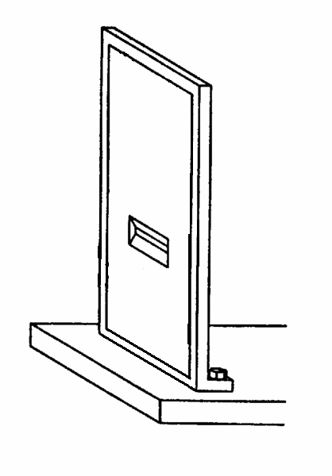
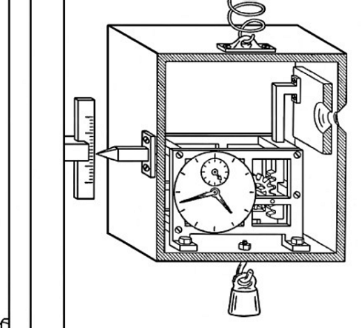

The Bohr-Einstein Debates#
The Bohr-Einstein debates were a series of intellectual exchanges between Niels Bohr and Albert Einstein about the interpretation and foundational principles of quantum mechanics. These debates highlighted the philosophical and scientific tensions surrounding quantum mechanics during its formative years.
Context of the Debates#
By the 1920s, quantum mechanics had emerged as a powerful framework for understanding atomic and subatomic phenomena, but its probabilistic nature challenged classical determinism. The debates were centered on whether quantum mechanics was a complete theory or an approximation of an underlying deterministic framework.
Einstein’s Perspective: Einstein believed in an underlying deterministic reality and was skeptical of the randomness and lack of completeness in quantum mechanics. He famously stated, “God does not play dice.”
Bohr’s Perspective: Bohr defended the Copenhagen interpretation, emphasising the probabilistic nature of quantum mechanics and the fundamental role of measurement and uncertainty.
Key Topics in the Debates#
Uncertainty Principle#
Proposed by Werner Heisenberg, the uncertainty principle states that certain pairs of physical properties (e.g., position and momentum) cannot be simultaneously measured with arbitrary precision.
Einstein attempted to challenge the universality of the uncertainty principle through thought experiments.
Einstein’s Thought Experiments#
Einstein used several thought experiments to illustrate what he saw as the incompleteness of quantum mechanics. Two notable examples include:
Einstein-Podolsky-Rosen (EPR) Paradox (1935):
Einstein, Podolsky, and Rosen argued that quantum mechanics was incomplete because it could not account for “elements of reality” without direct measurement.
The EPR paradox introduced the concept of quantum entanglement, later leading to experimental validations of quantum mechanics.
Einstein’s Clock Experiment:
A direct challenge to the uncertainty principle, Einstein devised a thought experiment involving a clock and a photon to measure both energy and time with arbitrary precision.
Einstein’s Slits Argument#
Einstein’s slits argument is a thought experiment he used to challenge the probabilistic nature of quantum mechanics and the uncertainty principle. It builds on the concept of the double-slit experiment, introducing an attempt to determine which slit a particle passes through while retaining the interference pattern.
Context of the Argument#
The traditional double-slit experiment demonstrates that particles like electrons or photons behave as waves when not observed (producing an interference pattern) and as particles when their path is measured (destroying the interference). This is a cornerstone of the Copenhagen interpretation of quantum mechanics, which holds that the act of measurement collapses the wavefunction.
Einstein sought to show that it should be possible to determine the particle’s path (which slit it passed through) without destroying the interference pattern, thus challenging the uncertainty principle.
The Experiment Setup#
Slit Apparatus:
A barrier has two slits through which a particle (e.g., an electron) can pass.
A detection screen is placed behind the slits to observe the resulting pattern.
Path Measurement:
Einstein proposed mounting the barrier (containing the slits) on a movable platform.
The platform is free to recoil slightly when the particle passes through one of the slits.
The momentum transferred to the barrier is measured to determine which slit the particle passed through.

Figure: A conceptual illustration of Einstein’s slits experiment, showing the barrier, slits, and the movable platform.
Einstein’s Reasoning#
Measuring Momentum Transfer:
When the particle passes through a slit, it imparts a recoil momentum to the barrier.
By measuring the recoil momentum, the slit through which the particle passed can be determined.
Maintaining Interference:
Einstein argued that if the measurement of the barrier’s momentum was precise but did not disturb the particle’s wavefunction significantly, the interference pattern might still be observed.
Challenge to the Uncertainty Principle:
The position of the particle at the slit and the momentum of the barrier are conjugate variables.
Einstein’s setup sought to measure the slit position and the momentum transfer without introducing significant uncertainty, thereby challenging the position-momentum uncertainty relation.
Bohr’s Counterargument#
Bohr demonstrated that Einstein’s argument inherently respects the uncertainty principle due to the following reasons:
Recoil Uncertainty:
The measurement of the barrier’s recoil momentum introduces an uncertainty in the position of the barrier (\( \Delta x \)).
This position uncertainty blurs the particle’s position at the slit, destroying the interference pattern.
Wave-Particle Complementarity:
Bohr emphasized the complementarity principle: measuring the slit through which the particle passes (particle-like behavior) inherently prevents the formation of the interference pattern (wave-like behavior).
Attempting to gain which-path information (particle behavior) eliminates the conditions required for interference.
Mathematical Consistency:
Bohr applied the uncertainty principle quantitatively:
If \( \Delta p \) is the uncertainty in the barrier’s recoil momentum and \( \Delta x \) is the uncertainty in the particle’s position:
\[\Delta x \Delta p \geq \frac{\hbar}{2}\]Precise measurement of \( \Delta p \) leads to a large \( \Delta x \), making the slit’s position uncertain and destroying the interference.
Key Points of the Argument#
Einstein’s Aim:
To demonstrate that both which-path information and interference patterns could coexist, contradicting the complementarity principle and the uncertainty relation.
Bohr’s Counter:
Bohr showed that the act of measuring momentum transfer inherently introduces enough uncertainty to preserve the uncertainty principle.
Implications#
Wave-Particle Duality:
Einstein’s argument reinforced the wave-particle duality and the role of measurement in quantum mechanics.
The impossibility of simultaneous which-path information and interference is a hallmark of quantum mechanics.
Uncertainty Principle:
Bohr’s rebuttal cemented the centrality of the uncertainty principle and demonstrated its consistency across various thought experiments.
Complementarity Principle:
Bohr’s argument highlighted the principle that wave-like and particle-like properties are mutually exclusive in measurement but collectively complete.
Modern Perspective#
Einstein’s slits argument, though countered by Bohr, spurred further experimental and theoretical investigations into the foundations of quantum mechanics, including the development of quantum decoherence theories and tests of quantum entanglement.
Einstein’s slits argument remains a cornerstone of the historical debates about quantum mechanics, exemplifying the interplay between intuition, mathematics, and experimental limits in the development of modern physics.
Einstein’s Clock Experiment#
Einstein proposed the following thought experiment:
Imagine a box with a clock attached to it. The clock controls a shutter that momentarily opens, allowing a photon of light to escape the box.
The energy of the emitted photon can be determined by weighing the box before and after the photon escapes.
Since the clock controls the exact moment of emission, both the energy (\( E \)) and the time (\( t \)) of the photon can be measured with arbitrary precision.
This thought experiment appears to violate the energy-time uncertainty relation:

Figure: Illustration of Einstein’s Clock Thought Experiment, used to challenge the energy-time uncertainty relation.
The Experiment Setup#
Box with a Clock: Imagine a box with a precise clock attached. The clock controls a shutter that momentarily opens to allow a photon of light to escape.
Measuring Energy: The energy of the photon is determined by weighing the box before and after the photon escapes. The difference in weight corresponds to the photon’s energy via Einstein’s mass-energy equivalence:
\[E = \Delta m c^2\]where \( \Delta m \) is the change in the box’s mass and \( c \) is the speed of light.
Measuring Time: The time of the photon’s release is controlled with arbitrary precision by the clock.
By this setup, Einstein argued that both the energy (\( E \)) and the time (\( t \)) of the photon could be measured simultaneously with arbitrary precision, violating the uncertainty principle.
Framing the Argument#
Einstein framed the argument as a direct challenge to the probabilistic nature of quantum mechanics. If the uncertainty principle was fundamental, the photon’s energy and time of release should not be measurable with arbitrary precision.
The crux of the argument was that the precision of the clock and the accuracy of the weighing mechanism were independent, suggesting no inherent limitation in measuring both quantities.
Bohr’s Counterargument#
Bohr responded to Einstein by incorporating general relativity into the analysis. He argued that the act of weighing the box introduces an inherent uncertainty that preserves the validity of the energy-time uncertainty relation.
Key Points of Bohr’s Counterargument#
Weighing the Box:
To measure the photon’s energy, the box is weighed in a gravitational field.
The weighing process introduces an uncertainty in the box’s position (\( \Delta x \)) due to limitations in measurement precision.
Gravitational Time Dilation:
According to general relativity, the position of the box in a gravitational field affects the rate of the clock due to gravitational time dilation:
\[\Delta t \propto \Delta x g\]where \( g \) is the gravitational acceleration and \( \Delta x \) is the uncertainty in the box’s position.
Uncertainty in Momentum:
The box’s position uncertainty (\( \Delta x \)) is related to an uncertainty in its momentum (\( \Delta p \)) via the position-momentum uncertainty principle:
\[\Delta x \Delta p \geq \frac{\hbar}{2}\]Since momentum affects energy measurements, this introduces an uncertainty in the photon’s energy (\( \Delta E \)).
Combined Effect:
Bohr showed that the uncertainties from weighing the box and time dilation combine to restore the energy-time uncertainty relation:
\[\Delta E \Delta t \geq \frac{\hbar}{2}\]
Calculations Supporting Bohr’s Counterargument#
Uncertainty in Time Due to Gravitational Time Dilation#
The clock’s time measurement is influenced by its position in a gravitational field:
where \( h = \Delta x \) is the uncertainty in the box’s vertical position and \( g \) is the gravitational acceleration.
Relating Position Uncertainty to Energy Uncertainty#
The position uncertainty (\( \Delta x \)) affects the photon’s energy measurement via momentum:
Using the uncertainty principle for position and momentum:
Substituting \( \Delta p = \Delta m g \Delta t \) gives:
Rearranging for \( \Delta E = \Delta m c^2 \):
This calculation demonstrated that any attempt to precisely measure both the photon’s energy and its release time would inherently satisfy the energy-time uncertainty relation.
Bohr’s Counterargument to the Clock Experiment#
Bohr ingeniously used general relativity to counter Einstein’s argument:
To measure the energy of the photon, the box must be weighed in a gravitational field.
According to general relativity, the weight of the box affects the time measured by the clock due to gravitational time dilation.
The uncertainty in the box’s position during weighing introduces an uncertainty in the clock’s measurement of time.
Bohr demonstrated that these uncertainties compensate in such a way that the energy-time uncertainty relation remains valid.
This counterargument reinforced the robustness of quantum mechanics and the uncertainty principle.
Examples to Illustrate Key Concepts#
Application of the Uncertainty Principle#
Consider the energy-time uncertainty relation in radioactive decay:
The lifetime (\( \Delta t \)) of an unstable particle, such as a muon, is inversely related to the uncertainty in its energy (\( \Delta E \)).
Short-lived particles have a large energy uncertainty, while long-lived particles have a smaller energy uncertainty. This is observed experimentally in particle physics.
Quantum Entanglement (EPR Paradox)#
Modern experiments validating the EPR paradox include:
Bell Test Experiments: Demonstrated that quantum mechanics predictions, including entanglement, cannot be explained by local hidden variables.
Photon Entanglement: In optical experiments, measurements on entangled photons show correlations that violate classical predictions.
Philosophical Differences#
Einstein’s View:
Quantum mechanics is an incomplete, statistical approximation of a deterministic reality.
Sought a hidden variables theory to explain quantum phenomena deterministically.
Bohr’s View:
Quantum mechanics is a complete and self-consistent theory, albeit probabilistic.
Emphasized the complementarity principle: properties like wave and particle behavior are mutually exclusive but collectively exhaustive.
Outcome of the Debates#
The debates did not produce a definitive winner but clarified the philosophical and conceptual issues of quantum mechanics.
Bohr’s arguments were widely accepted, and the Copenhagen interpretation became the dominant framework.
Einstein’s criticisms laid the groundwork for later developments, such as:
Bell’s Theorem (1964): Showed that no local hidden variables could reproduce all predictions of quantum mechanics.
Quantum Entanglement Experiments: Validated quantum mechanics predictions that Einstein had challenged.
Legacy of the Debates#
The Bohr-Einstein debates exemplify the interplay between philosophy and physics in the evolution of scientific ideas.
Einstein’s challenges inspired deeper investigations into the foundations of quantum mechanics.
These debates remain a classic example of scientific discourse, showcasing the importance of rigorous argumentation in theoretical physics.